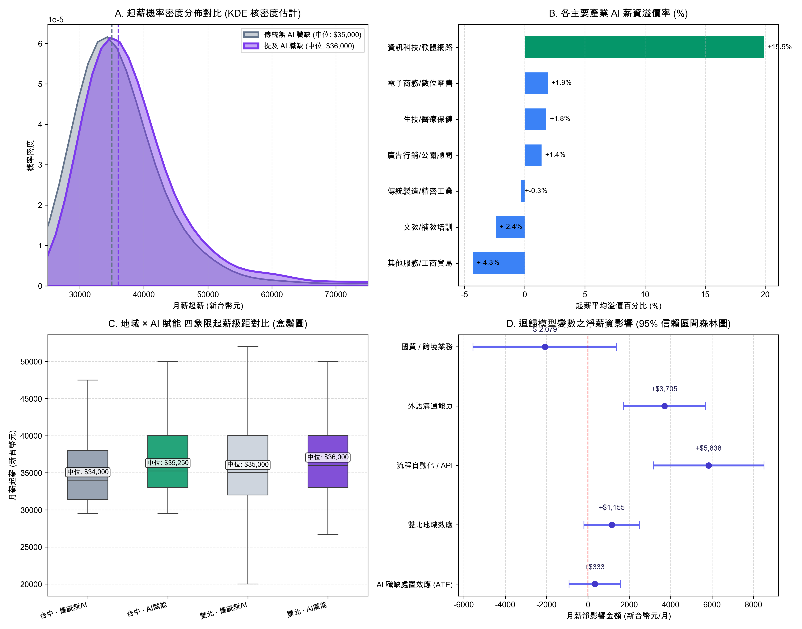

數據驅動的高教重塑與就業破局
5,286 筆真實職缺看中科大國貿系的「AI 賦能外銷之路」
—— 突破文商科 30K 低薪迴圈、重塑四年階梯實作課綱，打造全台最懂「流程自動化」的外貿精英
「主任、院長、各位老師好。今天這份報告不是泛泛而談 AI 有多熱門，而是我們用真實爬取的 5,286 筆就業市場數據，經過嚴謹計量經濟模型檢驗後的結論。我們想回答兩個最核心的問題：第一，文組學生學 AI 到底能不能多賺錢？第二，中科大國貿系如何利用這個趨勢，在少子化浪潮中打出一場漂亮的招生與就業翻身仗？」
痛點與危機：傳統商管文組的「30K 低薪迴圈」與招生警訊
低薪打單天花板
國貿畢業生常被視為「行政助理、報關打單員」，起薪集中在 30K～33K。傳統外語優勢又隨 AI 即時翻譯普及而被稀釋，學生集體陷入「AI 替代焦慮」。
課程高度同質化
全台商管科系多數仍停留在「背誦 Incoterms 條規、刷證照、期末寫紙本專題」。若只教學生「用 ChatGPT 聊天寫英文信」，已被市場視為皮毛，毫無溢價效果。
少子化招生保衛戰
高中生與家長選系高度現實，最看重「畢業出路與起薪保證」。若系所無法拿出「差異化、看得見的薪資破局能力」，生源流失風險與日俱增。
「各位長官，少子化下家長最在乎的就是『畢業出路』。現在全台灣每所學校都在教學生下 Prompt、請 ChatGPT 改英文信。但我們的實證發現，企業根本不為這種皮毛技能加薪！如果我們不能拿出具有真正議價力的人才培訓架構，傳統國貿系的吸引力將迅速被邊緣化。」
5,286 筆大數據硬核實證：顛覆直覺的四大計量發現

依《就業服務法》，4 萬以上方得面議。傳統無 AI 僅 17.5% 面議（82.5% 卡在 4 萬以下）；而 AI 職缺高達 39.8% 進入面議高薪池！
台中具 AI 賦能者起薪中位（$35,250）正式超越雙北傳統無 AI（$35,000）。數位力足以完全打破南北城鄉差距！
計量 OLS 迴歸揭示：純寫 Prompt 淨溢價僅 +$333 (不顯著)；但若具備 API 串接與流程自動化，起薪淨增 +$5,838 / 月！
「請看這張圖與三組數字。我們用 2,679 筆完全無 AI 的傳統職缺作為對照組，對比 2,607 筆 AI 職缺。結果顯示：AI 技能最重要的價值，是讓職缺突破《就業服務法》4 萬元的面議天花板，機率高出 3.12 倍！更振奮人心的是：台中的 AI 職缺起薪中位數已經超過雙北無 AI 職缺！這代表我們的台中子弟只要具備這項技能，完全不需要北漂就能拿到超越台北的起薪。」
國貿系的獨家戰略定位：打造「外貿流程自動化架構師」
「我們常常擔心：國貿系學生又不是資工系，學程式怎麼拚得過工程師？但企業根本不需要國貿系去寫底層神經網絡！企業要的是一個懂貿易術語、懂英文 RFQ，同時能用 No-Code 工具把訂單流程串接好的複合型人才。這是資工系看不懂、傳統文組不會做的藍海市場，正是我們系所獨一無二的戰略定位。」
大一到大四無痛嵌入課綱：不改必修學分的四年落地方案
| 年級 | 現有對應課程 | 微調實作任務 | 學生期末產出（具體作品） | 市場起薪目標 |
|---|---|---|---|---|
| 大一 | 計算機概論 商用英文 |
LINE 官方帳號 + Make.com 自動推播 | 可運作的「雙語國貿術語諮詢 Bot」 | $35,000 |
| 大二 | 國際貿易實務 行銷學 |
Webhook + OpenAI 結構化抽取 + 匯率 API | 「買家詢價 Email → 自動生成報價單草稿」管線 | $38,000 ~ $40,000 |
| 大三 | 跨境電子商務 產學實習 |
對接在地企業型錄，搭建 RAG 向量知識庫 | 「多語外銷型錄 RAG + 50 筆人工盲測報告」 | $40,000 ~ $45,000 (面議池) |
| 大四 | 畢業專題 創業實作 |
企業試營運、Token 邊際成本、資安合規 | 個人線上作品集 (Live Demo，手機現場演示) | $45,000 ~ $55,000+ |
「院長、主任最關心的通常是：改課綱會不會很麻煩？會不會排擠現有老師的教學？答案是：完全不用改學分！我們只要在現有的商英、貿實、電商和專題課程中，將期末作業從『寫紙本報告』升級為『具體的工作流產出』。學生大一做出 Bot、大二做出自動報價單、大三完成企業 RAG、大四人手一個 Live Demo 作品集。四年的成長路徑清清楚楚。」
對外招生宣傳的爆發力文宣：打動高中生與家長的三大金句
「誰說文組只能領 3 萬？在台中學 AI 流程力，起薪擊敗台北傳統文組！」
以 5,286 筆真實薪資數據背書（台中 AI $35,250 > 雙北無 AI $35,000），破除家長對商管低薪的疑慮。
「別人面試拿紙本履歷，中科大學生直接拿手機演示：『老闆，這是替您串好的自動報價系統！』」
人手一個線上 Live Demo 作品集，以肉眼可見的降本增效成果秒殺傳統應徵者。
「3.12 倍突破 4 萬元面議勝算！我們培養的是未來的『外銷總助與自動化架構師』。」
明確告訴家長：念中科大國貿，不是當被 AI 取代的基層打單員，而是當駕馭 AI 的指揮官。
「如果在高三學生與家長參訪日，別的學校還在講 Incoterms 講義有多厚、歷屆學長姐去哪裡實習，而我們當場讓高中生拿出手機掃 QR Code，輸入自己的多益分數，即時測算未來的市場身價，並展示學長姐做的自動化報價機器人，哪一個系所對家長的說服力更強？這就是我們招生的核彈級武器。」
校務治理與計畫爭取：爭取教育部教學實踐與高教深耕計畫
校務研究 (IR) 評鑑亮點
以 5,286 筆真實就業數據為基石，建立「畢業生職能對齊儀表板」，直接對接 AACSB / 系所評鑑「以學生學習成效為核心」之查核指標。
教育部教學實踐研究計畫
計畫題目模板：
《準實驗大數據導向之國貿 AI 流程自動化階梯教學模式對學生就業競爭力之影響》
爭取 30~50 萬專案研究補助。
台中在地外銷產學合作
對接台中精密機械園區、中科製造業與手工具外銷廠商，由大三、大四組成「AI 外銷自動化顧問隊」，爭取產學合作計畫與企業實習名額。
「這套方案不僅能解決招生與教學問題，更能為學院與系所帶來具體的外部資源。我們可以用這個成熟的實證數據庫，輔導年輕老師申請教育部教學實踐研究計畫，甚至對接台中在地廠商爭取產學合作經費，達成學生、系所、學院與產業四贏。」
結論與行動倡議：讓中科大國貿成為全台外貿 AI 轉型旗艦
通過各年級實作指引
系課委會微調大一至大四課程期末產出規範，建立「期末產出 Bot / 報價單 / RAG 報告」驗收標準。
全系身價與技能落點普查
開學第一個月由各班導師推動學生進行線上身價診斷，建立系所學生數位能力的 IR 基準線（Baseline）。
首屆國貿 AI 自動化競賽
邀請台中外銷企業提供真實詢價信與型錄，學生現場展示自動化管線，邀請企業主管與高中職師生觀摩。
「讓每一位走進中科大國貿系的學生，都能帶著 4 萬以上的身價自信走入職場！」
感謝聆聽 · 敬請主任、院長指教與研討
「最後，我們懇請主任與院長支持這三個步驟。我們不需要大興土木，只需要用好的數據、好的指引，激發學生的實戰潛能。讓我們攜手把中科大國貿系打造成全台灣最懂 AI 流程自動化的外貿精英搖籃！」